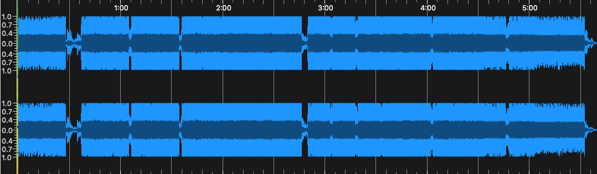
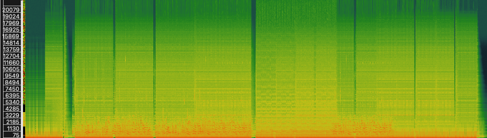
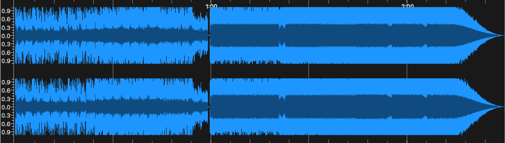
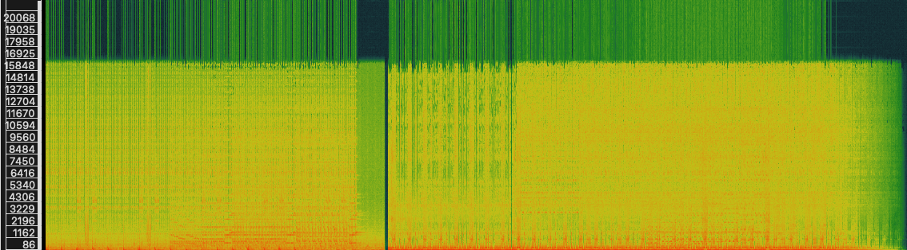
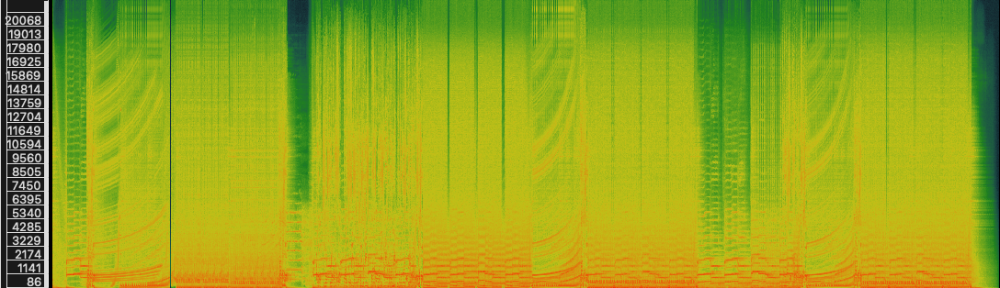
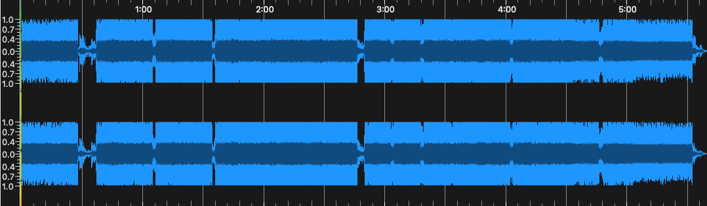
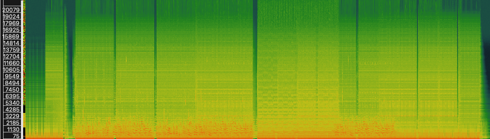
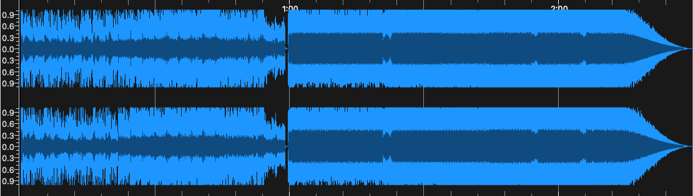
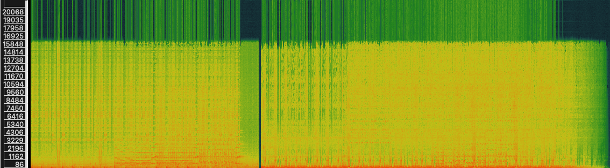
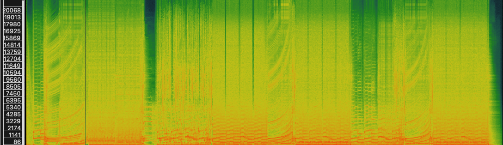

Week 8: Music As Sound
Task 1 - 3 Pieces of Music Relating To My Theme
For this weeks task, we have been asked to pick 3 pieces of music in relation to our chosen theme and identify most important technical and non-technical metadata associated with each track. The tracks I have chosen can be found below:
| Title | Artist | Composer | Copyright | Genre | Source | File/Audio Format | Number of Channels | Sample Rate | Bits per Second | Duration |
|---|---|---|---|---|---|---|---|---|---|---|
| Duvet | Love Letters From Amsterdam | Virtual Self / Love Letters From Amsterdam | CC BY-NC-SA 3.0 | Trance / Techno | SoundCloud | .WAV | 2 | 44100Hz | 32000 | 5:39 |
| Tremor | Devon | Devon / Virtual Self | CC BY-NC-SA 3.0 | Industrial Trance | SoundCloud | .WAV | 2 | 44100Hz | 32000 | 2:30 |
| Party Like a Rockstar | Aftershock and LXCPR | Aftershock and LXCPR | CC BY-NC-SA 3.0 | Hardstyle | SoundCloud | .WAV | 2 | 44100Hz | 32000 | 3:35 |
Task 2 - Spectrogram of Chosen Music Pieces
Virtual Self - Duvet (Love Letters From Amsterdam Edit)


Virtual Self - Tremor (Devon Re-Make)


Aftershock & LCXCPR - Party Like a Rockstar


Analysis
Virtual Self - Duvet (Love Letters From Amsterdam Edit)


Virtual Self - Tremor (Devon Re-Make)


Aftershock & LCXCPR - Party Like a Rockstar

Analysis
From this task, what I've found is that the waveform is very opaque and does not contain a great deal of face-value information that we can use to analyse a piece of music. By introducing time-based frequency visuals (i.e through the spectrogram), we can gather a lot more data from the music pieces and render it as information that we can use - for example, it contains numerical data such as frequencies. For example, in Virtual Self - Tremor (Devon Re-Make), the track is very drums orientated which I believe the frequencies reflect during the drop/release sections. The spectrograms can also gauge what kinds of melodies are being played if we can draw relation between frequency and pitch (for example, the Duvet and Party Like A Rockstar examples contain a lot of melody-orientated parts in their tracks).